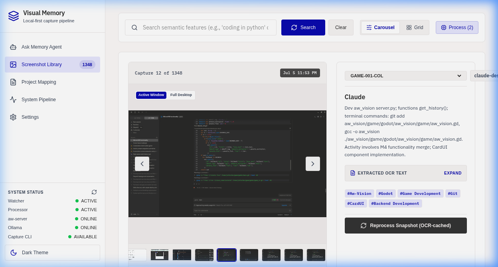

aw-vision is an autonomous background companion that indexes your active computer sessions, extracts structured text via local OCR, and lets you query your historical memory using natural language.

A local-first stack running offline models for 100% data sovereignty.
Monitors active status using ActivityWatch buckets. Ingestion sleeps automatically during AFK cycles to guard CPU resources and disk space.
Commits layout text, visions, and temporal contexts as high-dimensional vectors to LanceDB, offering instantaneous natural language queries.
Supports local offline models (glm-ocr, gemma4) via Ollama, or high-fidelity cloud models via Gemini, fully runtime configurable.
A built-in LangGraph ReAct Agent that executes local and external context queries to answer questions about your work history.
Take a tour of the aw-vision developer control center.
The central dashboard offers a full chronological stream of your desktop history. Hover or click to open the Lightbox Modal, where you can view raw OCR captures, edit custom user-context notes, and see historical vision analyses grounded in temporal neighbor snapshots.
Analyze your focus times across various workspace project keys. Using both heuristics and deep semantic vision mappings, the pipeline groups screenshots into projects to track your effort automatically.
PRJ-2026-089.The backend coordinates CPU-aware bulk sweeps during idle windows, processing screenshots in sequential stages:
Leverage the LangGraph ReAct agent to retrieve context instantly. Ask questions like "What was I working on yesterday morning?" or "Find files where I edited the Vite config."
Customization is built directly into settings. Define local model names, configure prompting templates, manage local/remote Model Context Protocol (MCP) integrations, and upload Claude Skills.
Because desktop captures contain highly sensitive information (credentials, emails, code, documents), aw-vision was built with privacy-by-design principles:
All screenshots are stored locally and processed via offline Ollama models by default. Your data never leaves your device unless you opt-in to cloud services.
Raw and processed image files are automatically pruned from disk after 14 days, protecting storage size and minimizing physical security exposure.
While raw images are wiped to preserve disk space, their text indices, descriptions, and semantic coordinates remain queryable forever in LanceDB.
API keys and credentials for cloud services (like Gemini API) or MCP servers are AES-256 encrypted using a hardware-derived key before saving to disk.